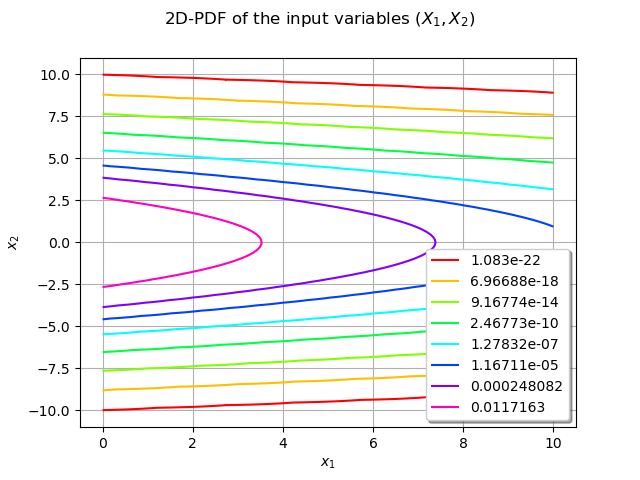
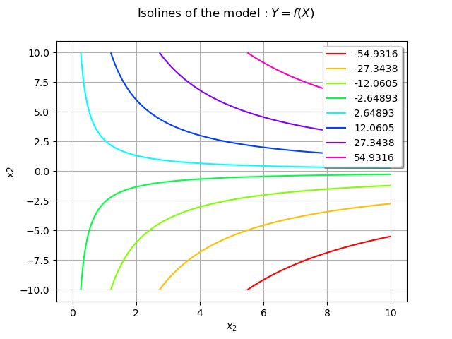
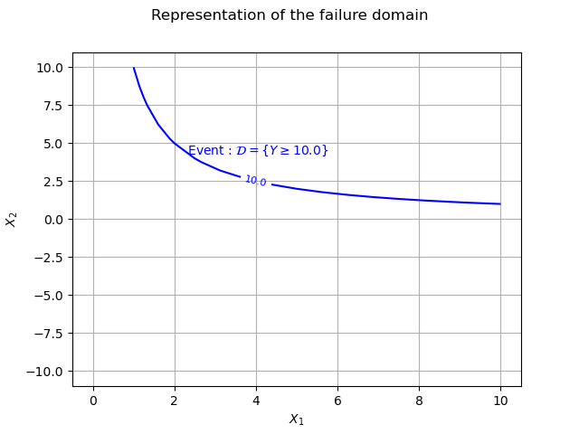
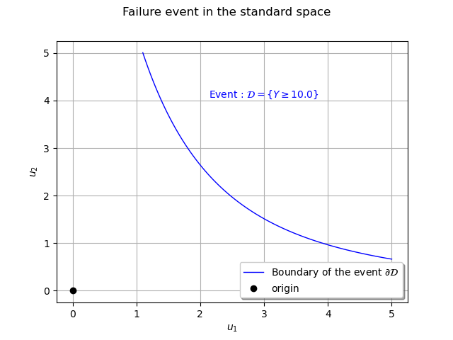
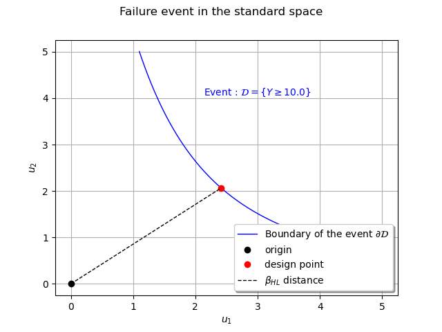
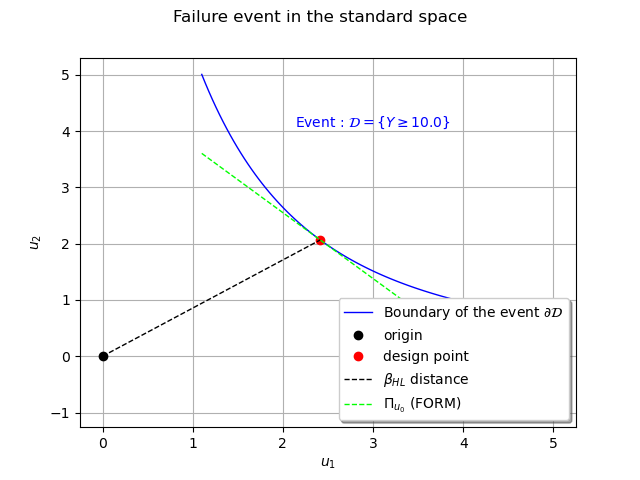
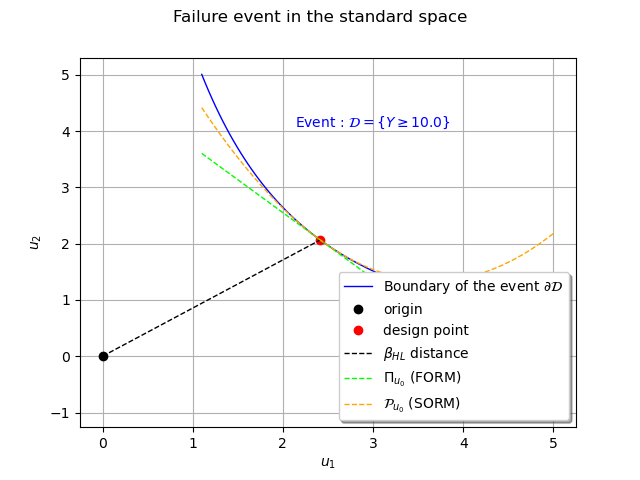

Note
Go to the end to download the full example code
An illustrated example of a FORM probability estimate¶
Abstract¶
In this example we illustrate the different steps of a FORM/SORM analysis on a simple example. We focus on the different steps and compare them with an analytic computation whenever possible.
import openturns as ot
import openturns.viewer as otv
import numpy as np
Position of the problem¶
We consider a bivariate random vector  with the following independent marginals:
with the following independent marginals:
an exponential distribution with parameter
 ,
,  ;
;a standard unit gaussian
 .
.
The support of the input vector is 
distX1 = ot.Exponential(1.0)
distX2 = ot.Normal()
distX = ot.ComposedDistribution([distX1, distX2])
We can draw the bidimensional PDF of the distribution distX over ![[0,-10] \times [10,10]]() :
:
ot.ResourceMap.SetAsUnsignedInteger("Contour-DefaultLevelsNumber", 8)
graphPDF = distX.drawPDF([0, -10], [10, 10])
graphPDF.setTitle(r"2D-PDF of the input variables $(X_1, X_2)$")
graphPDF.setXTitle(r"$x_1$")
graphPDF.setYTitle(r"$x_2$")
graphPDF.setLegendPosition("bottomright")
view = otv.View(graphPDF)

We consider the model  which maps the random input vector
which maps the random input vector  to the output variable
to the output variable  .
We also draw the isolines of the model f.
.
We also draw the isolines of the model f.
f = ot.SymbolicFunction(["x1", "x2"], ["x1 * x2"])
graphModel = f.draw([0.0, -10.0], [10.0, 10.0])
graphModel.setXTitle(r"$x_1$")
graphModel.setXTitle(r"$x_2$")
graphModel.setTitle(r"Isolines of the model : $Y = f(X)$")
view = otv.View(graphModel)

We want to estimate the probability  of the output variable to be greater than a prescribed threshold
of the output variable to be greater than a prescribed threshold  : this is the failure event.
This probability is simply expressed as an integral:
: this is the failure event.
This probability is simply expressed as an integral:
![P_f = \int_{\mathcal{D}} \mathbf{1}_{\mathcal{D}}(x) df_{X_1,X_2}(x)]()
where ![\mathcal{D} = \{ (x_1, x_2) \in [0,+\infty[ \times \mathbb{R} / x_1 x_2 \geq s \}]() is the failure domain.
In the general case the probability density function
is the failure domain.
In the general case the probability density function  and the domain of integration
and the domain of integration  are difficult to handle.
are difficult to handle.
We first define RandomVector objects and the failure event associated to the output random variable.
vectorX = ot.RandomVector(distX)
vectorY = ot.CompositeRandomVector(f, vectorX)
s = 10.0
event = ot.ThresholdEvent(vectorY, ot.Greater(), s)
This event can easily be represented with a 1D curve as it is a branch of an hyperbole.
If  , then the boundary of the domain of failure is the curve :
, then the boundary of the domain of failure is the curve :

We shall represent this curve using a Contour object.
nx, ny = 15, 15
xx = ot.Box([nx], ot.Interval([0.0], [10.0])).generate()
yy = ot.Box([ny], ot.Interval([-10.0], [10.0])).generate()
inputData = ot.Box([nx, ny], ot.Interval([0.0, -10.0], [10.0, 10.0])).generate()
outputData = f(inputData)
mycontour = ot.Contour(xx, yy, outputData, [10.0], ["10.0"])
myGraph = ot.Graph("Representation of the failure domain", r"$X_1$", r"$X_2$", True, "")
myGraph.add(mycontour)
texts = [r" Event : $\mathcal{D} = \{Y \geq 10.0\}$"]
myText = ot.Text([[4.0, 4.0]], texts)
myText.setTextSize(1)
myGraph.add(myText)
view = otv.View(myGraph)

We can superimpose the event boundary with the 2D-PDF ot the input variables :
mycontour.setColor("black")
mycontour.setLabels(["event"])
graphPDF.add(mycontour)
graphPDF.setLegendPosition("bottomright")
view = otv.View(graphPDF)

From the previous figure we observe that in the failure domain the PDF takes small (and even very small) values.
Consequently the probability of the failure, the integral is also expected to be small.
The FORM/SORM methods estimate this kind of integral.
The FORM approximation¶
The basic steps of the FORM (or SORM) algorithm are :
an isoprobabilistic transform ;
finding the design point : that is the nearest point wrt the origin in the standard space ;
estimating the probability integral.
As mentioned, both the density function and the domain of integration are complex in general. The first step of the FORM method makes the density easier to work with and the second step tackles the domain of integration problem.
Variable transform¶
OpenTURNS has several isoprobabilistic transforms and the FORM/SORM classes implement the Generalized Nataf and Rosenblatt transforms. In this case the distX distribution is not elliptical so the default method is the Rosenblatt transform.
print("Is Elliptical ? ", distX.isElliptical())
Is Elliptical ? False
We seek an isoprobabilistic transform  such as
such as

where each component of  is a standard unit gaussian.
is a standard unit gaussian.
The isoprobabilistic transform and its inverse are methods of the distribution distX :
transformation = distX.getIsoProbabilisticTransformation()
inverseTransformation = distX.getInverseIsoProbabilisticTransformation()
The main goal of this step is to work with a simpler probability density function of the input variables as they will be standard gaussian unit and uncorrelated. The domain of integration will still be complicated but will be handled with a well chosen approximate.
We detail the Rosenblatt transform in this simple case. In this example we consider independent variables so the transform is simpler, we only have to perform the transformation on each variable. For the second one is already a standard unit gaussian we transform the first variable only.
We draw a realization of the random input vector. This point is said to be in the physical space. We shall focus on the first component.
xi = vectorX.getRealization()
The first step of the Rosenblatt transform is to build a random variable  with a uniform law in ]0,1[.
This is done through an evaluation of the CDF of distX1 at the given point in the physical space.
Once again, please note that the second component is left unchanged.
with a uniform law in ]0,1[.
This is done through an evaluation of the CDF of distX1 at the given point in the physical space.
Once again, please note that the second component is left unchanged.
ui = [distX1.computeCDF(xi[0]), xi[1]]
The second step is to build a standard unit gaussian from a uniform variable. This is done by a simple call to the probit function. The point zi is said to be in the standard space.
zi = [-ot.Normal().computeInverseSurvivalFunction(ui[0])[0], ui[1]]
The sought transform then maps a point in the physical space to the standard space :
print(xi, "->", ui, "->", zi)
[2.9148,-0.638205] -> [0.9457853530971221, -0.6382050644192208] -> [1.605293205236795, -0.6382050644192208]
We also build the isoprobabilistic transform  and its inverse
and its inverse  for the
first marginal :
for the
first marginal :
transformX1 = distX1.getIsoProbabilisticTransformation()
inverseTransformX1 = distX1.getInverseIsoProbabilisticTransformation()
We can check the result of our experiment against :
the 2D-transform
;the 1D-transform
and the second component unchanged ;
and observe the results are the same.
zi1D = [transformX1([xi[0]])[0], xi[1]]
zi2D = transformation(xi)
print("zi = ", zi)
print("zi1D = ", zi1D)
print("zi2D = ", zi2D)
zi = [1.605293205236795, -0.6382050644192208]
zi1D = [1.605293205236795, -0.6382050644192208]
zi2D = [1.60529,-0.638205]
We can represent the boundary of the event in the standard space : that is a composition of the
hyperbole  and the inverse transform defined by
and the inverse transform defined by
![inverseTransformX1]() .
.
failureBoundaryPhysicalSpace = ot.SymbolicFunction(["x"], ["10.0 / x"])
failureBoundaryStandardSpace = ot.ComposedFunction(
failureBoundaryPhysicalSpace, inverseTransformX1
)
x = np.linspace(1.1, 5.0, 100)
cx = np.array([failureBoundaryStandardSpace([xi])[0] for xi in x])
graphStandardSpace = ot.Graph(
"Failure event in the standard space", r"$u_1$", r"$u_2$", True, ""
)
curveCX = ot.Curve(x, cx, r"Boundary of the event $\partial \mathcal{D}$")
curveCX.setLineStyle("solid")
curveCX.setColor("blue")
graphStandardSpace.add(curveCX)
We add the origin to the previous graph.
cloud = ot.Cloud([0.0], [0.0])
cloud.setColor("black")
cloud.setPointStyle("fcircle")
cloud.setLegend("origin")
graphStandardSpace.add(cloud)
graphStandardSpace.setGrid(True)
graphStandardSpace.setLegendPosition("bottomright")
# Some annotation
texts = [r"Event : $\mathcal{D} = \{Y \geq 10.0\}$"]
myText = ot.Text([[3.0, 4.0]], texts)
myText.setTextSize(1)
graphStandardSpace.add(myText)
view = otv.View(graphStandardSpace)

The design point¶
The FORM and SORM methods assume that the failure probability integral has its support in the vicinity of the closest point of the domain to the origin. Then the second step of the method is to find this point, the design point, through a minimization problem under constraints.
We configure the Cobyla solver that we use for the optimization :
solver = ot.Cobyla()
solver.setMaximumIterationNumber(10000)
solver.setMaximumAbsoluteError(1.0e-3)
solver.setMaximumRelativeError(1.0e-3)
solver.setMaximumResidualError(1.0e-3)
solver.setMaximumConstraintError(1.0e-3)
We build the FORM algorithm with its basic constructor. The starting point for the optimization algorithm is the mean of the input variables.
algoFORM = ot.FORM(solver, event, distX.getMean())
We are ready to run the algorithm and store the result :
algoFORM.run()
result = algoFORM.getResult()
The design point can be retrieved in both physical and standard space with respectively the getPhysicalSpaceDesignPoint and getStandardSpaceDesignPoint methods.
designPointPhysicalSpace = result.getPhysicalSpaceDesignPoint()
designPointStandardSpace = result.getStandardSpaceDesignPoint()
print("Design point in physical space : ", designPointPhysicalSpace)
print("Design point in standard space : ", designPointStandardSpace)
Design point in physical space : [4.84183,2.06513]
Design point in standard space : [2.41384,2.06513]
We can get the Hasofer index with the getHasoferReliabilityIndex method which is the distance of the design point to the origin:
betaHL = result.getHasoferReliabilityIndex()
print("Hasofer index : ", betaHL)
Hasofer index : 3.176696193499833
We visualize it on the previous graph.
cloud = ot.Cloud([designPointStandardSpace[0]], [designPointStandardSpace[1]])
cloud.setColor("red")
cloud.setPointStyle("fcircle")
cloud.setLegend("design point")
graphStandardSpace.add(cloud)
graphStandardSpace.setGrid(True)
graphStandardSpace.setLegendPosition("bottomright")
cc = ot.Curve(
[0.0, designPointStandardSpace[0]],
[0.0, designPointStandardSpace[1]],
r"$\beta_{HL}$ distance",
)
cc.setLineStyle("dashed")
cc.setColor("black")
graphStandardSpace.add(cc)
view = otv.View(graphStandardSpace)

Estimating the failure probability integral¶
The last step of the FORM algorithm is to replace the domain of integration by the half-space at the design point. In this simple example the half-space is delimited by the tangent at the design point in the standard space.
The expression of the failure domain boundary in the standard space is the composition of the
hyperbole and the inverse transform on the first variable. We can compute
the gradient (here the first derivative of a 1D function  ) at any given point with the
getGradient method :
) at any given point with the
getGradient method :
u0 = [designPointStandardSpace[0]]
du0 = failureBoundaryStandardSpace.getGradient().gradient(u0)
print("abscissa of the design point u0 = ", u0[0])
print("value of the failure boundary at u0 = ", failureBoundaryStandardSpace(u0)[0])
print("value of the gradient of the failure boundary at u0 = ", du0[0, 0])
abscissa of the design point u0 = 2.413844253971037
value of the failure boundary at u0 = 2.065335164471684
value of the gradient of the failure boundary at u0 = -1.1706609709179403
In the standard space the equation of the tangent  is given by
is given by
![\Pi_{u_0}(x) = (h \circ T^{-1}) (u_0) + \frac{d}{dx} (h \circ T^{-1}) (u_0) (x-u_0)]()
x = np.linspace(1.1, 5.0, 100)
hyperplane = failureBoundaryStandardSpace(u0)[0] + du0[0, 0] * (x - u0)
curveHyperplane = ot.Curve(x, hyperplane, r"$\Pi_{u_0}$ (FORM)")
curveHyperplane.setLineStyle("dashed")
curveHyperplane.setColor("green")
graphStandardSpace.add(curveHyperplane)
view = otv.View(graphStandardSpace)

In the standard space the PDF of the input variables is rotationally invariant so

where  is the survival function of the standard unit gaussian.
is the survival function of the standard unit gaussian.
pf = ot.Normal().computeSurvivalFunction(betaHL)
print("FORM : Pf = ", pf)
FORM : Pf = 0.0007448149708283228
This proability of failure is the one computed in the FORMResult and obtained with the getEventProbability method :
pf = result.getEventProbability()
print("Probability of failure (FORM) Pf = ", pf)
Probability of failure (FORM) Pf = 0.0007448149708283228
The SORM approximation¶
The SORM approximate uses an osculating paraboloid instead of the half-space delimited by the tangent at the design point. In this case it is a simple parabola we can obtain through Taylor expansion at the design point. However, in the general case one has to manipulate the gradient and the hessian in the standard space which is cumbersome.
We need the value of the second derivative of the failure boundary function at the design point in the standard space :
u0 = [designPointStandardSpace[0]]
d2u0 = failureBoundaryStandardSpace.getHessian().hessian(u0)
print("abscissa of the design point u0 = ", u0[0])
print("value of the hessian of the failure boundary at u0 = ", d2u0[0, 0, 0])
abscissa of the design point u0 = 2.413844253971037
value of the hessian of the failure boundary at u0 = 0.9401058369722994
In the standard space the equation of the osculating parabola  at
at  is given by
is given by
![\mathcal{P}_{u_0}(x) = h \circ T^{-1} (u_0) + \frac{d}{dx} (h \circ T^{-1})(u_0) (x-u_0) + \frac{1}{2} \frac{d^2}{dx^2} (h \circ T^{-1})(u_0) (x-u_0)^2]()
x = np.linspace(1.1, 5.0, 100)
parabola = (
failureBoundaryStandardSpace(u0)[0]
+ du0[0, 0] * (x - u0)
+ 0.5 * d2u0[0, 0, 0] * (x - u0) ** 2
)
curveParabola = ot.Curve(x, parabola, r"$\mathcal{P}_{u_0}$ (SORM)")
curveParabola.setLineStyle("dashed")
curveParabola.setColor("orange")
graphStandardSpace.add(curveParabola)
view = otv.View(graphStandardSpace)

The next step is to estimate the principal curvatures of the osculating paraboloid.
For any regular function  the curvature
the curvature  at the point
at the point  in cartesian coordinates reads as
in cartesian coordinates reads as
![\kappa(x_0) = \frac{g''(x_0)}{(1+[g'(x_0)]^2)^{3/2}}.]()
For the oscillating parabola of concern we use the gradient and hessian previously computed :
curvature = (d2u0[0, 0, 0]) / (1 + (du0[0, 0]) ** 2) ** (3 / 2)
print("Curvature (analytic formula) = ", curvature)
Curvature (analytic formula) = 0.2575913913877353
We build the SORM algorithm and run it :
algoSORM = ot.SORM(solver, event, distX.getMean())
algoSORM.run()
The SORM result is obtained with the getResult method :
resultSORM = algoSORM.getResult()
The principal curvatures of the osculating paraboloid at the design point is obtained by the getSortedCurvatures method :
print("Curvature (estimated) = ", resultSORM.getSortedCurvatures()[1])
Curvature (estimated) = 0.25761034541451805
Once the curvature is obtained there are several ways of approximating the failure probability .
The library implements the Breitung, Hohenbichler and Tvedt estimates.
For instance, the Breitung approximation gives
![P_f \approx E(\beta_{HL}) \frac{1}{\sqrt{1+\beta_{HL}\kappa}}]()
coeff = (1.0 + betaHL * curvature) ** (-0.5)
pf = (1.0 - ot.Normal().computeCDF(betaHL)) * coeff
print("SORM : Pf = ", pf)
SORM : Pf = 0.0005523531956154747
We can compare with the different estimators implemented in OpenTURNS :
pfBreitung = resultSORM.getEventProbabilityBreitung()
pfHohenbichler = resultSORM.getEventProbabilityHohenbichler()
pfTvedt = resultSORM.getEventProbabilityTvedt()
print("Probability of failure (SORM Breintung) Pf = ", pfBreitung)
print("Probability of failure (SORM Hohenbichler) Pf = ", pfHohenbichler)
print("Probability of failure (SORM Tvedt) Pf = ", pfTvedt)
Probability of failure (SORM Breintung) Pf = 0.0005523440504786004
Probability of failure (SORM Hohenbichler) Pf = 0.0005420328660300074
Probability of failure (SORM Tvedt) Pf = 0.0005381057564255441
Display all figures
otv.View.ShowAll()
Reset default settings
ot.ResourceMap.Reload()